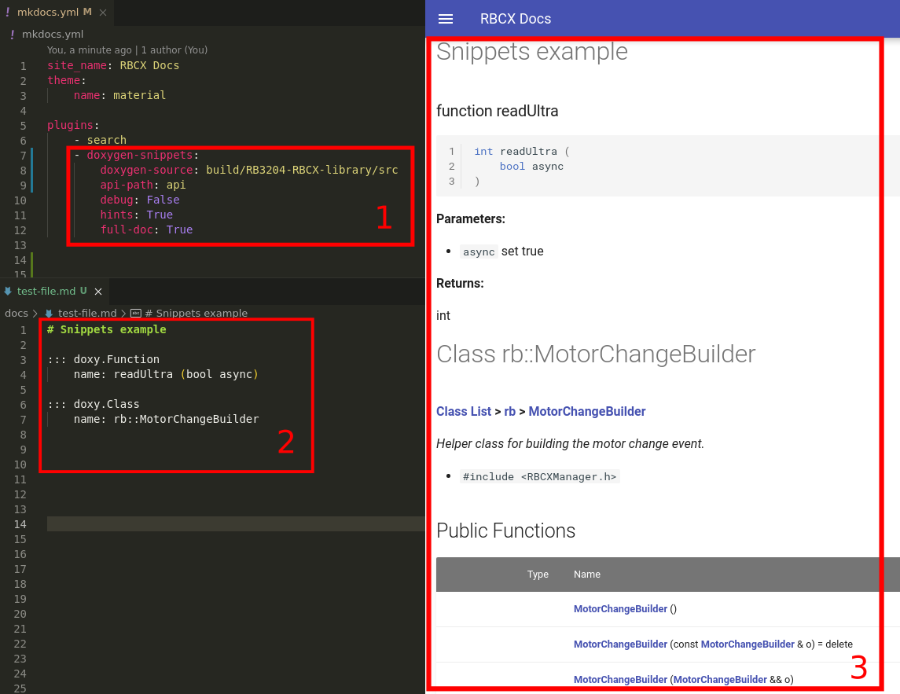

MkDoxy
MkDoxy -> MkDocs + Doxygen. Easy documentation with code snippets.
Based on matusnovak/doxybook
This python tool is extension for MkDocs. Extension will take your programme source code and runs Doxygen. Than converts exported XML into markdown and create new folder with full generated documentation. Next usage is by snippets inside documentation markdown.
Example usage
-
Generate class with name
rb::MotorChangeBuilder -
Generate method
brake (MotorId id, uint16_t brakingPower)from class with namerb::MotorChangeBuilderA -
Generate function with name
readUltra (bool async) -
Generate code snippet from file
RBCXLeds.cpp

Requirements
Apt
- python 3.6 or newer ->
sudo apt install python3 - Pip ->
sudo apt install python3-pip - Git ->
sudo apt install git - Doxygen ->
sudo apt install doxygen
Pip
- Jinja2 ->
pip install jinja2 - Mkdocs ->
pip install mkdocs - ruamel.yaml ->
pip install ruamel.yaml
Optional:
- mkdocs-material ->
pip install mkdocs-material
Installation
Install using Python Pip: https://pypi.org/project/mkdocs-doxygen-snippets-plugin/
Or Install manually:
git clone https://github.com/JakubAndrysek/mkdocs-doxygen-snippets-plugin.git
cd mkdocs-doxygen-snippets-plugin
python setup.py install
License
MIT License
Copyright (c) 2021 Kuba Andrýsek
Permission is hereby granted, free of charge, to any person obtaining a copy
of this software and associated documentation files (the "Software"), to deal
in the Software without restriction, including without limitation the rights
to use, copy, modify, merge, publish, distribute, sublicense, and/or sell
copies of the Software, and to permit persons to whom the Software is
furnished to do so, subject to the following conditions:
The above copyright notice and this permission notice shall be included in all
copies or substantial portions of the Software.
THE SOFTWARE IS PROVIDED "AS IS", WITHOUT WARRANTY OF ANY KIND, EXPRESS OR
IMPLIED, INCLUDING BUT NOT LIMITED TO THE WARRANTIES OF MERCHANTABILITY,
FITNESS FOR A PARTICULAR PURPOSE AND NONINFRINGEMENT. IN NO EVENT SHALL THE
AUTHORS OR COPYRIGHT HOLDERS BE LIABLE FOR ANY CLAIM, DAMAGES OR OTHER
LIABILITY, WHETHER IN AN ACTION OF CONTRACT, TORT OR OTHERWISE, ARISING FROM,
OUT OF OR IN CONNECTION WITH THE SOFTWARE OR THE USE OR OTHER DEALINGS IN THE
SOFTWARE.